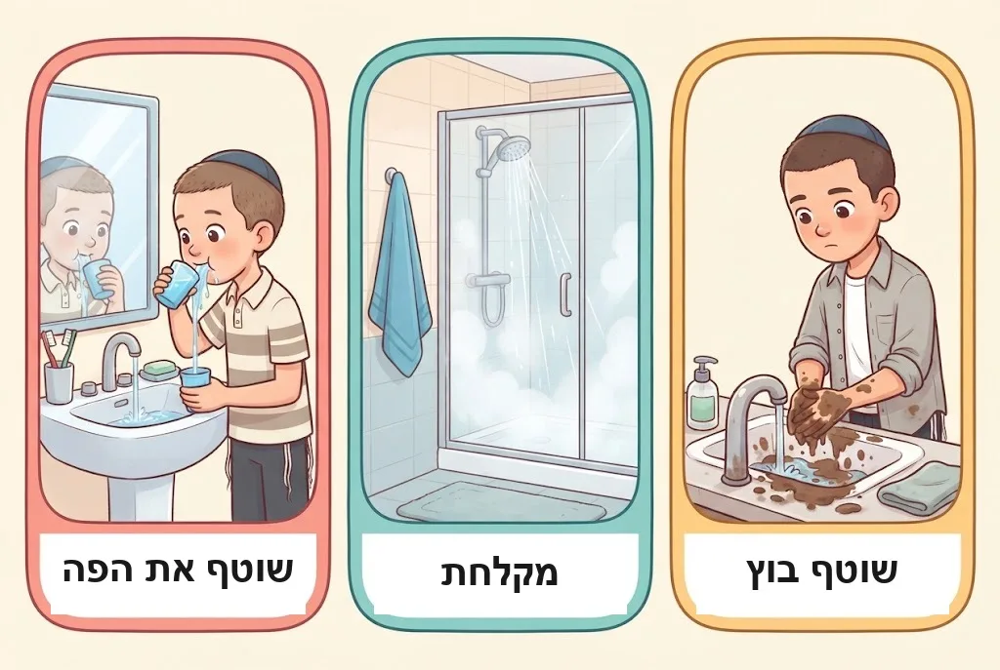
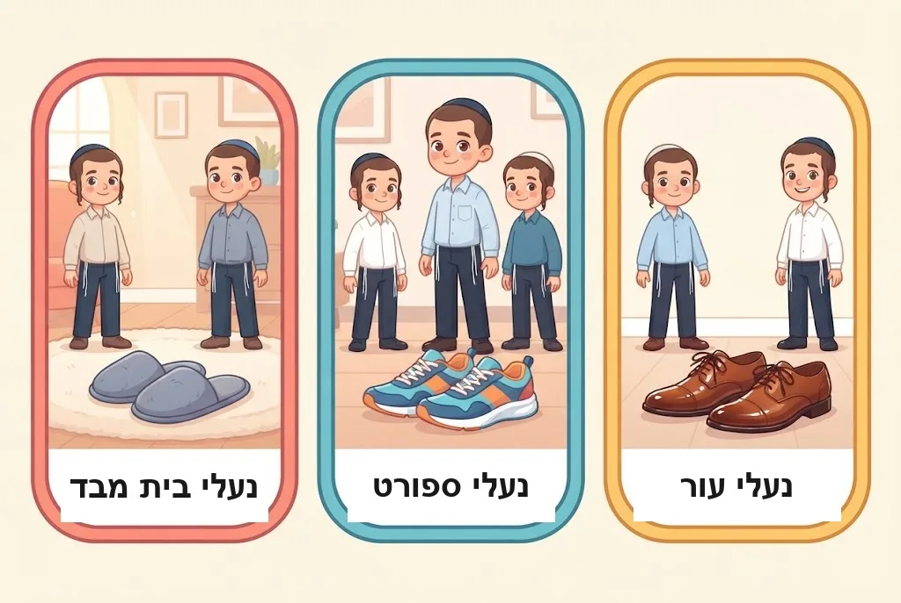
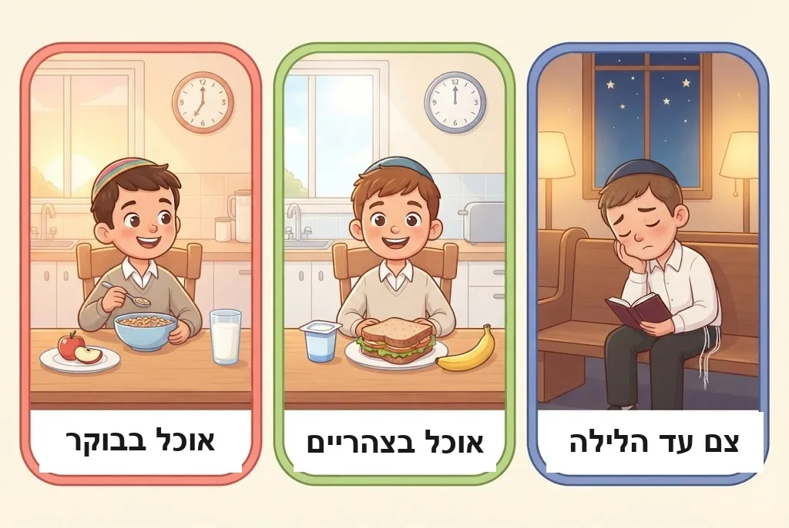

בַּבֹּקֶר שֶׁל יוֹם הַכִּפֻּרִים אַתָּה קָם, הוֹלֵךְ לַכִּיּוֹר – וְנִזְכָּר: הַיּוֹם לֹא שׁוֹטְפִים פָּנִים. וּבַכְּנִיסָה לַבַּיִת מְחַכּוֹת נַעֲלֵי הַבַּד, בִּמְקוֹם הַנַּעֲלַיִם הָרְגִילוֹת. בַּפֶּרֶק הַזֶּה נִלְמַד מָה עוֹד אָסוּר בְּיוֹם הַכִּפֻּרִים מִלְּבַד אֲכִילָה וּשְׁתִיָּה, וּמָתַי מֻתָּר – וְגַם מֵאֵיזֶה גִּיל מַתְחִילִים לָצוּם.
1חֲמִשָּׁה עִנּוּיִים
בְּיוֹם הַכִּפֻּרִים יֵשׁ חֲמִשָּׁה עִנּוּיִים: אֲכִילָה וּשְׁתִיָּה, רְחִיצָה, סִיכָה (מְרִיחַת שֶׁמֶן אוֹ קְרֶם), נְעִילַת הַסַּנְדָּל, וְעִנּוּי נוֹסָף שֶׁנּוֹגֵעַ לַמְּבֻגָּרִים. הָעִקָּר הוּא הַהִמָּנְעוּת מֵאֲכִילָה וּשְׁתִיָּה. לְדַעַת רֹב הַפּוֹסְקִים, רַק הֵן אֲסוּרוֹת מִן הַתּוֹרָה, וְאֶת הָאֲחֵרִים אָסְרוּ חֲכָמִים.
🤔 לָמָּה? הַמִּצְוָה אֵינָהּ לְהִצְטַעֵר – לֹא צָרִיךְ לָשֶׁבֶת בַּשֶּׁמֶשׁ כְּדֵי לִסְבֹּל. הַמִּצְוָה הִיא לִשְׁבֹּת מִדְּבָרִים שֶׁנּוֹתְנִים לַגּוּף הֲנָאָה. חֲכָמִים לָמְדוּ שֶׁיֵּשׁ חֲמִשָּׁה עִנּוּיִים מִכָּךְ שֶׁהַתּוֹרָה כּוֹתֶבֶת חָמֵשׁ פְּעָמִים שֶׁמִּצְוָה לְהִתְעַנּוֹת.
(פֶּרֶק ט׳, הֲלָכָה א׳)
2לֹא רוֹחֲצִים לְתַעֲנוּג
כָּל רְחִיצָה שֶׁל תַּעֲנוּג אֲסוּרָה, בְּמַיִם חַמִּים אוֹ קָרִים – אֲפִלּוּ לְהַכְנִיס אֶצְבַּע קְטַנָּה לַמַּיִם. אֲבָל מִי שֶׁהִתְלַכְלֵךְ בְּבֹץ, אוֹ שֶׁיָּרַד לוֹ דָּם מִן הָאַף – רַשַּׁאי לִרְחֹץ אֶת הַמָּקוֹם הַמְלֻכְלָךְ. מִי שֶׁהִזִּיעַ מְאֹד וְסוֹבֵל – רַשַּׁאי לִרְחֹץ אֶת מְקוֹם הַזֵּעָה. מֻתָּר לְהָסִיר בִּמְעַט מַיִם ״קוּרֵי שֵׁנָה״ מִן הָעֵינַיִם. לֹא שׁוֹטְפִים אֶת הַפֶּה, וּמִי שֶׁמִּצְטַעֵר מֵרֵיחַ הַפֶּה – מְצַחְצֵחַ שִׁנַּיִם בְּמִבְרֶשֶׁת יְבֵשָׁה.
🤔 לָמָּה? כְּשֶׁהַכַּוָּנָה הִיא לְהָסִיר לִכְלוּךְ וְלֹא לְהִתְעַנֵּג – זוֹ אֵינָהּ ״רְחִיצָה שֶׁל תַּעֲנוּג״. וְאֶת הַפֶּה לֹא שׁוֹטְפִים גַּם מִשּׁוּם שֶׁמָּא יִבְלַע טִפַּת מַיִם.
(פֶּרֶק ט׳, הֲלָכָה ב׳)

3נְטִילַת יָדַיִם
בַּבֹּקֶר נוֹטְלִים יָדַיִם שָׁלֹשׁ פְּעָמִים, אֲבָל רַק עַד סוֹף קִשְׁרֵי הָאֶצְבָּעוֹת – וְלֹא אֶת כָּל כַּף הַיָּד. כָּךְ נוֹטְלִים גַּם אַחֲרֵי הַשֵּׁרוּתִים. הַכֹּהֲנִים נוֹטְלִים אֶת כָּל הַיָּד לִפְנֵי בִּרְכַּת כֹּהֲנִים.
🤔 לָמָּה? נְטִילָה עַד קִשְׁרֵי הָאֶצְבָּעוֹת מַסְפִּיקָה לְנִקָּיוֹן וּלְהָסָרַת הָרוּחַ הָרָעָה, וְאֵין צֹרֶךְ בְּיוֹתֵר. וּנְטִילַת הַכֹּהֲנִים הִיא נְטִילָה שֶׁל מִצְוָה, וְלָכֵן הִיא מֻתֶּרֶת.
(פֶּרֶק ט׳, הֲלָכָה ג׳)
4סִיכָה וּבֹשֶׂם
אָסוּר לִמְרֹחַ שֶׁמֶן אוֹ קְרֶם עַל הַגּוּף, אֲפִלּוּ עַל מָקוֹם קָטָן. גַּם כָּל סוּגֵי הָאִפּוּר אֲסוּרִים, כְּמוֹ בְּשַׁבָּת. בֹּשֶׂם אוֹ דֵּאוֹדוֹרַנְט לְרֵיחַ טוֹב – אָסוּר. אֲבָל כְּדֵי לְהָסִיר רֵיחַ רַע – מֻתָּר, וְגַם תַּרְסִיס נֶגֶד יַתּוּשִׁים מֻתָּר. מִי שֶׁסּוֹבֵל מִגֵּרוּד – רַשַּׁאי לִמְרֹחַ שֶׁמֶן שֶׁגַּם בְּרִיאִים מוֹרְחִים לִפְעָמִים.
🤔 לָמָּה? הָאִסּוּר הוּא עַל הֲנָאָה וְרַעֲנַנּוּת. מָה שֶׁנַּעֲשֶׂה כְּדֵי לְהָסִיר רֵיחַ רַע אוֹ לְהִתְגּוֹנֵן מִיַּתּוּשִׁים – אֵינוֹ תַּעֲנוּג.
(פֶּרֶק ט׳, הֲלָכָה ד׳)
5נְעִילַת הַסַּנְדָּל
אָסוּר לִנְעֹל סַנְדָּל אוֹ נַעַל בְּיוֹם הַכִּפֻּרִים. פַּעַם עָשׂוּ נַעֲלַיִם טוֹבוֹת רַק מֵעוֹר, וְנַעֲלַיִם מֵחֳמָרִים אֲחֵרִים הָיוּ לֹא נוֹחוֹת. הַיּוֹם עוֹשִׂים נַעֲלַיִם נוֹחוֹת מִכָּל חֹמֶר, וְיֵשׁ בָּזֶה שְׁתֵּי שִׁיטוֹת. נַעֲלֵי בַּיִת מִבַּד מֻתָּרוֹת לְכָל הַדֵּעוֹת. וְהָרַב מֶלָמֵד עַצְמוֹ כּוֹתֵב שֶׁאֵין לִמְחוֹת בְּמִי שֶׁסּוֹמֵךְ עַל הַמְּקִלִּים, וְכָל אֶחָד נוֹהֵג כְּרַבּוֹתָיו.
🤔 לָמָּה? בְּלִי נַעֲלַיִם נוֹחוֹת מַרְגִּישִׁים בְּכַף הָרֶגֶל אֶת קֹשִׁי הַדֶּרֶךְ – וְזֶה חֵלֶק מִן הָעִנּוּי.
🔀 שְׁנֵי מִנְהָגִים – וּשְׁנֵיהֶם כַּהֲלָכָה
לְפִי רֹב הַפּוֹסְקִים הָאִסּוּר הוּא רַק עַל נַעַל שֶׁל עוֹר. נַעֲלַיִם מִבַּד, מִגּוּמִי אוֹ מִפְּלַסְטִיק – מֻתָּרוֹת.
לְפִי הָרַב מֶלָמֵד אָסוּר לִנְעֹל כָּל נַעַל אוֹ סַנְדָּל שֶׁהוֹלְכִים בָּהֶם בַּחוּץ, מִכָּל חֹמֶר שֶׁהוּא. מֻתָּרוֹת רַק נַעֲלֵי בַּיִת מִבַּד אוֹ נַעֲלֵי גּוּמִי פְּשׁוּטוֹת מְאֹד.
(פֶּרֶק ט׳, הֲלָכָה ה׳)

6מָתַי מֻתָּר לִנְעֹל?
הָאִסּוּר הוּא לִנְעֹל נַעֲלַיִם בִּשְׁבִיל נוֹחוּת. לָכֵן מֻתָּר לִנְעֹל נַעֲלַיִם לְמִי שֶׁהוֹלֵךְ בְּמָקוֹם שֶׁיֵּשׁ בּוֹ סַכָּנָה מֵעַקְרַבִּים, לְמִי שֶׁהוֹלֵךְ בְּבֹץ וּבְטִיט, וּלְחַיָּל בְּשֵׁרוּת מִבְצָעִי – בְּנַעֲלֵי צָבָא. גַּם חוֹלֶה שֶׁעָלוּל לְהִצְטַנֵּן בְּלִי נַעֲלַיִם – נוֹעֵל. וּמִי שֶׁסּוֹבֵל מְאֹד בְּלִי מִדְרָסִים – רַשַּׁאי לְהַנִּיחַ אוֹתָם בְּתוֹךְ נַעַל בַּיִת.
🤔 לָמָּה? כְּשֶׁנּוֹעֲלִים נַעֲלַיִם בִּגְלַל צֹרֶךְ אֲמִתִּי – כְּדֵי לְהִשָּׁמֵר אוֹ כְּדֵי לִשְׁמֹר עַל אֲחֵרִים – אֵין זוֹ נוֹחוּת, וְאֵין אִסּוּר.
💛 הַחַיָּל שֶׁשּׁוֹמֵר עַל עַם יִשְׂרָאֵל בְּיוֹם הַכִּפֻּרִים מְקַיֵּם מִצְוָה גְּדוֹלָה – גַּם כְּשֶׁהוּא בְּנַעֲלֵי צָבָא.
(פֶּרֶק ט׳, הֲלָכָה ו׳)

7יְלָדִים וְהָעִנּוּיִים
מֵהַגִּיל שֶׁבּוֹ הַיְלָדִים מְבִינִים אֶת מִצְווֹת יוֹם הַכִּפֻּרִים – בְּדֶרֶךְ כְּלָל בְּגִיל חָמֵשׁ אוֹ שֵׁשׁ – מְחַנְּכִים אוֹתָם שֶׁלֹּא לִרְחֹץ, לֹא לִמְרֹחַ וְלֹא לִנְעֹל נַעֲלַיִם. יֵשׁ מְהַדְּרִים לְחַנֵּךְ שֶׁלֹּא לִנְעֹל נַעֲלַיִם כְּבָר מִגִּיל שָׁלֹשׁ. וְהַגְּדוֹלִים אֵינָם רוֹחֲצִים, מוֹרְחִים אוֹ נוֹעֲלִים נַעֲלַיִם אֲפִלּוּ לְתִינוֹק – אֶלָּא אִם יֵשׁ צֹרֶךְ רְפוּאִי, אוֹ שֶׁהַקָּטָן עָלוּל לְהִפָּגַע בְּלִי נַעֲלַיִם.
🤔 לָמָּה? אָסוּר לַגְּדוֹלִים לְהַכְשִׁיל קְטַנִּים בְּדָבָר אָסוּר, אֲפִלּוּ תִּינוֹק בֶּן יוֹמוֹ. אֲבָל לְצֹרֶךְ הַבְּרִיאוּת שֶׁל הַקָּטָן – חֲכָמִים הִתִּירוּ.
(פֶּרֶק ט׳, הֲלָכָה ח׳)
8מֵאֵיזֶה גִּיל צָמִים?
לִפְנֵי גִּיל תֵּשַׁע לֹא מְחַנְּכִים אֶת הַיְלָדִים לָצוּם, כִּי הֵם עֲדַיִן חַלָּשִׁים וְהַצּוֹם עָלוּל לְהַזִּיק לָהֶם. מִגִּיל תֵּשַׁע מְחַנְּכִים בָּנִים וּבָנוֹת בְּרִיאִים לָצוּם כַּמָּה שָׁעוֹת: מִי שֶׁרָגִיל לֶאֱכֹל בִּשְׁמוֹנֶה בַּבֹּקֶר – יֹאכַל לִקְרַאת הַצָּהֳרַיִם. יְלָדִים חַלָּשִׁים – מִגִּיל עֶשֶׂר. מִגִּיל אַחַת עֶשְׂרֵה מְחַנְּכִים לָצוּם יוֹם שָׁלֵם, וְחַלָּשִׁים – עַד הַצָּהֳרַיִם. בְּגִיל שְׁתֵּים עֶשְׂרֵה הַבָּנוֹת חַיָּבוֹת לָצוּם מִן הַתּוֹרָה. הַבָּנִים בְּגִיל שְׁתֵּים עֶשְׂרֵה צָמִים מִדִּבְרֵי חֲכָמִים, לְחִנּוּךְ, וּמִגִּיל שְׁלֹשׁ עֶשְׂרֵה – מִן הַתּוֹרָה. בֵּן חוֹלֶה בְּגִיל שְׁתֵּים עֶשְׂרֵה אֵינוֹ חַיָּב, וּמִשְׁתַּדֵּל לָצוּם עַד הַצָּהֳרַיִם. רַבִּים נוֹהֲגִים לְעוֹדֵד יְלָדִים שֶׁלֹּא יֹאכְלוּ בַּלַּיְלָה, אֲבָל אִם הֵם מְבַקְּשִׁים – נוֹתְנִים לָהֶם.
🤔 לָמָּה? בַּת מַגִּיעָה לְמִצְווֹת בְּגִיל שְׁתֵּים עֶשְׂרֵה, וּבֵן בְּגִיל שְׁלֹשׁ עֶשְׂרֵה. הַחִנּוּךְ הַהַדְרָגָתִי עוֹזֵר לַיְלָדִים לְהַגִּיעַ לַצּוֹם הַמָּלֵא בְּכֹחַ וּבְשִׂמְחָה.
🔀 שְׁנֵי מִנְהָגִים – וּשְׁנֵיהֶם כַּהֲלָכָה
רַבִּים סָבְרוּ שֶׁלִּפְנֵי גִּיל תֵּשַׁע צָרִיךְ לִמְנֹעַ מֵהַיְלָדִים לָצוּם אֲפִלּוּ כַּמָּה שָׁעוֹת, שֶׁמָּא יַזִּיק לָהֶם.
וְנוֹהֲגִים רֹב יִשְׂרָאֵל לָתֵת לִילָדִים שֶׁרוֹצִים בְּכָךְ לָצוּם כַּמָּה שָׁעוֹת בַּבֹּקֶר גַּם לִפְנֵי גִּיל תֵּשַׁע, כִּי הָרוֹפְאִים אוֹמְרִים שֶׁאֵין בָּזֶה סַכָּנָה.
💛 כָּל שָׁעָה שֶׁיֶּלֶד צָם לְפִי גִּילוֹ הִיא מַתָּנָה קְטַנָּה לַה׳. וְגַם כְּשֶׁיֶּלֶד קָטָן אוֹכֵל – הוּא עוֹשֶׂה בְּדִיּוּק מָה שֶׁה׳ רוֹצֶה מִמֶּנּוּ בַּגִּיל הַזֶּה.
(פֶּרֶק ט׳, הֲלָכָה ח׳)

📝 מָה לָמַדְנוּ
- בְּיוֹם הַכִּפֻּרִים יֵשׁ חֲמִשָּׁה עִנּוּיִים, וְהָעִקָּר – אֲכִילָה וּשְׁתִיָּה.
- לֹא רוֹחֲצִים לְתַעֲנוּג, אֲבָל מֻתָּר לִרְחֹץ לִכְלוּךְ, וְנוֹטְלִים יָדַיִם רַק עַד קִשְׁרֵי הָאֶצְבָּעוֹת.
- לֹא מוֹרְחִים קְרֶם וּבֹשֶׂם, אֲבָל מֻתָּר לְהָסִיר רֵיחַ רַע וּלְהִתְגּוֹנֵן מִיַּתּוּשִׁים.
- לֹא נוֹעֲלִים נַעֲלֵי עוֹר; בְּנַעֲלַיִם מֵחֳמָרִים אֲחֵרִים יֵשׁ שְׁתֵּי שִׁיטוֹת, וְנַעֲלֵי בַּד מֻתָּרוֹת לְכָל הַדֵּעוֹת.
- מִגִּיל תֵּשַׁע מְחַנְּכִים לָצוּם שָׁעוֹת, מִגִּיל אַחַת עֶשְׂרֵה יוֹם שָׁלֵם; בָּנוֹת חַיָּבוֹת מִגִּיל שְׁתֵּים עֶשְׂרֵה, וּבָנִים מִשְּׁלֹשׁ עֶשְׂרֵה.
❓ שְׁאֵלוֹת חֲזָרָה
- דָּנִי הִתְלַכְלֵךְ בְּבֹץ בְּיוֹם הַכִּפֻּרִים. מֻתָּר לוֹ לִשְׁטֹף אֶת הַיָּדַיִם? וְלָמָּה אָסוּר לִשְׁטֹף פָּנִים סְתָם כָּךְ?
- מָה הַהֶבְדֵּל בֵּין שִׁיטַת רֹב הַפּוֹסְקִים לְשִׁיטַת הָרַב מֶלָמֵד בִּנְעִילַת נַעֲלַיִם? וְאֵילוּ נַעֲלַיִם מֻתָּרוֹת לְכָל הַדֵּעוֹת?
- מֵאֵיזֶה גִּיל מַתְחִילִים לְחַנֵּךְ לָצוּם שָׁעוֹת? וּמִמָּתַי בָּנוֹת וּבָנִים חַיָּבִים לָצוּם מִן הַתּוֹרָה?
🎯 רוֹצִים לִבְדֹּק אֶת עַצְמְכֶם? לַחִידוֹן ״יוֹם הַכִּפּוּרִים״
📚 עוֹד חָמְרֵי לִמּוּד עַל הֲלָכָה – חִנָּם, בַּמַּאֲגָר הַקּוֹל הַחֲמִישִׁי: https://www.kol-toda.co.il/halacha/
הַמַּאֲגָר הַמָּלֵא: https://www.kol-toda.co.il/
הַמַּאֲגָר הַמָּלֵא: https://www.kol-toda.co.il/